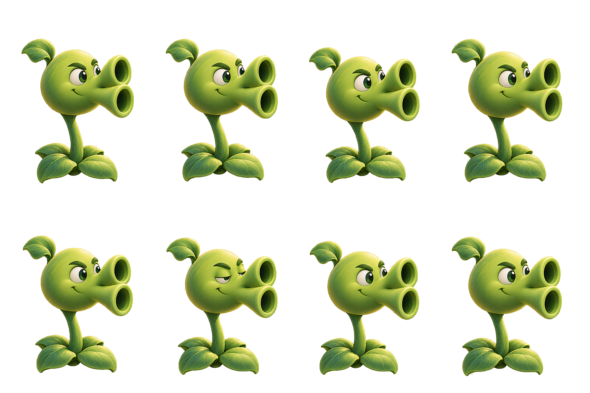

同一颗头带着上下两根炮管整体左右摆动并眨眼，茎部弯曲带动，底叶与根部固定，炮口始终朝右。直接切换8张源图，无交叉淡化、无额外程序化摆动。注意：本次生成摆弧仅完成左半（F6-F8 未出现右侧极限）、眼睑较计划晚 1 帧，详见 README 偏差说明。
上方为放大检查，下方为接近游戏中的显示尺寸。

实际导出：1536×1024 透明PNG，4列×2行。按8个实际角色区域切帧，根部定位对齐。原始带背景生成图：repeater-sway-blink-8f-v1.png；强化措辞重抽备选图：repeater-sway-blink-8f-v2.png。
查看8帧姿态参考图 · 静态母版 repeater-design-v1.png